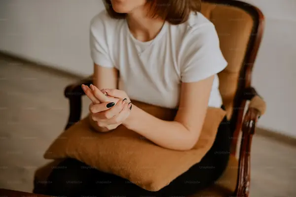

Nossa Missão: Acolher o Luto
Projeto Amparo: Este braço emergencial fornece segurança material para que famílias enlutadas possam viver o luto sem a preocupação com contas essenciais e a falta de alimento na mesa. Veja nossas ações de conscientização e como sua contribuição se transforma em vidas salvas na comunidade.
Transparência e Suporte Prático
Encontre nosso guia completo de como se preparar para a doação (local e requisitos). Nossa central de documentos públicos garante a transparência total sobre a aplicação dos recursos captados.
Participe: Voluntariado e Doação

Voluntariado: Cadastre-se em nossa plataforma e ajude em campanhas e eventos de logística de entrega de cestas básicas. Doação: Sua contribuição apoia diretamente nossas ações sociais e é direcionada à compra de cestas básicas e pagamento de contas emergenciais.